5 IC Design of a Universal Biquad Filter
This paper presents the IC design of a universal biquad filter with a 1 kHz corner frequency and Q-factor of 10. The design, initiated with Python behavioral modeling and simulated in Xschem, first explored an ideal op-amp based filter. However, its transistor-level implementation with a 5-transistor OTA failed due to poor OTA performance. This led to a revised design utilizing a more robust Gm-C biquad topology driven by a high-performance, fully differential OTA. While facing challenges in reaching the desired OTA gain, the final Gm-C filter’s simulated low-pass response indicated areas for further optimization in the design approach for mixed-signal applications. GitHub Repo
6 Introduction
As the availability of standardized integrated circuit solutions continues to diminish, the demand for tailored, application-specific analog and mixed-signal designs is steadily increasing Dobkin2011?. Reflecting this shift, students enrolled in the “Concept Engineering Mixed-Technology Systems” course, taught by Professor Meiners at The City University of Applied Sciences, have been tasked with designing a biquadratic filter. The goal is to create a high-performance, application-specific solution suitable for integration within a defined analog front-end system.
Analog signal processing remains a foundational element of modern electronic design. Despite rapid advancements in digital technology—characterized by nanometer-scale fabrication and Gigahertz-level processing speeds—the real world continues to present signals in analog form. Therefore, analog circuitry, particularly in the front-end of many systems, plays a critical role in conditioning signals before digitization kester2005data?.
In mixed-signal systems, analog signal processing is increasingly being paired with powerful digital post-processing techniques. This synergy allows engineers to rely on cost-effective analog components while compensating for their limitations through digital correction and enhancement methods Baker2008?. However, before digital techniques can be applied, analog filtering remains essential for tasks such as noise suppression, anti-aliasing, and band selection. Biquadratic filters—due to their versatile frequency response characteristics and relatively simple implementation—are widely used in these contexts.
6.1 Objective of the lab
To design a biquad active filter with a corner frequency (ω0) of 1 kHz and a Q-factor of 10, and to understand its frequency characteristics.
6.2 Motivation: importance of second-order (biquad) filters
Second-order filters, also known as biquad filters, are fundamental in constructing higher-order filters:
- They serve as building blocks for \(N^{\text{th}}\) order filters when \(N > 2\).
- For odd values of \(N\), an \(N^{\text{th}}\) order filter can be implemented using \(\frac{N - 1}{2}\) second-order filters and one first-order filter.
- For even values of \(N\), \(\frac{N}{2}\) second-order filters are required to realize an \(N^{\text{th}}\) order filter.
7 Filter Design Fundamentals
7.1 Second order universal active filter

The circuit diagram shows a universal active filter capable of producing four different types of outputs simultaneously. It is constructed from four operational transcundactance amplifiers - two inverting intergrators, 2 inverting adders, resistors, and capacitors.
- BPF Output: First Integrator (top-left op-amp) processes the input signal.
- LPF Output: Second Integrator (top-middle op-amp) takes the BPF output as its input.
- HPF Output: Inverting Adder 1 (top-right op-amp) sums the LPF output, the BPF output, and the original input signal.
- BSF Output: Inverting Adder 2 (bottom op-amp) sums the LPF and HPF outputs.
7.2 The Inverting Adder
An inverting adder (or summing amplifier) outputs a voltage that is the inverted, weighted sum of its input voltages.
7.2.1 Output Voltage Equation
For an inverting adder with three inputs (\(V_a, V_b, V_c\)), input resistors (\(R_a, R_b, R_c\)), and a feedback resistor (\(R_f\)), the output voltage \(V_o\) is:
\[ V_o = - \left( \frac{R_f}{R_a}V_a + \frac{R_f}{R_b}V_b + \frac{R_f}{R_c}V_c \right) \]
7.3 The Inverting Integrator
An inverting integrator is an operational amplifier circuit that produces an output voltage proportional to the time integral of its input voltage, with an inverted sign. It’s fundamentally an inverting amplifier with a capacitor in the feedback path.
7.3.1 Output Voltage Equation
For an inverting integrator with an input voltage (\(V_i\)), an input resistor (\(R_1\)), and a feedback capacitor (\(C_f\)), the output voltage \(V_o\) is:
\[V_o = - \frac{1}{R_1 C_f} \int V_i \, dt + V_o(0)\]
7.4 Transfer function
The biquadratic filter, or “biquad,” is a second-order filter widely used in analog filter design. Its general transfer function is given by: \[H(s)=\frac{a_{1}s^{2}+b_{1}s+c_{1}}{a_{2}s^{2}+b_{2}s+c_{2}}\]
The numerator coefficients can be chosen to achieve low-pass, band-pass, or high-pass responses. For example, setting \(a_{1}=b_{1}=0\) leads to a low-pass filter (LPF). Higher-order filters can be constructed by cascading biquad sections.
Second-order filters can realize four types of filters, with their transfer functions typically shown below.
Here are the transfer functions for common second-order active filters:
Low Pass Filter (LPF): \[\frac{V_{03}}{V_{i}}=\frac{+H_{0}}{(1+\frac{s}{\omega_{0}Q}+\frac{s^{2}}{\omega_{0}^{2}})}\]
High Pass Filter (HPF): \[\frac{V_{01}}{V_{i}}=\frac{(H_{0}\cdot\frac{S^{2}}{G_{i}^{2}})}{(1+\frac{S}{a_{0}Q}+\frac{S^{2}}{a_{0}^{2}})}\]
Band Pass Filter (BPF): \[\frac{V_{02}}{V_{i}}=\frac{(-H_{0}\cdot\frac{S}{Q_{0}})}{(1+\frac{S}{Q_{0}Q}+\frac{S^{2}}{Q_{0}^{2}})}\]
Band Stop Filter (BSF): \[\frac{V_{o4}}{V_{i}}=\frac{(1+\frac{s^{2}}{Q_{o}^{2}})\cdot H_{0}}{(1+\frac{s}{Q_{o}Q}+\frac{s^{2}}{Q_{o}^{2}})}\]
8 Behavioral Model Analysis using python
This sectio presents the behavioral analysis of the designed system using Python. The analysis primarily includes the frequency response (magnitude and phase response) and transient analysis.
8.1 1. Objective
To evaluate the performance of the behavioral model through simulation using Python, focusing on:
- Magnitude response
- Phase response
- Transient behavior
8.2 2. Frequency Response Analysis
8.2.1 2.1 Magnitude Response
The magnitude response of the system was plotted to observe how the system amplifies or attenuates input signals across different frequencies. The Bode magnitude plot gives a clear insight into the bandwidth and gain characteristics.
8.2.2 2.2 Phase Response
The phase response of the system was analyzed to study the phase shift introduced at various frequencies. This is essential for understanding the signal integrity and phase margin.
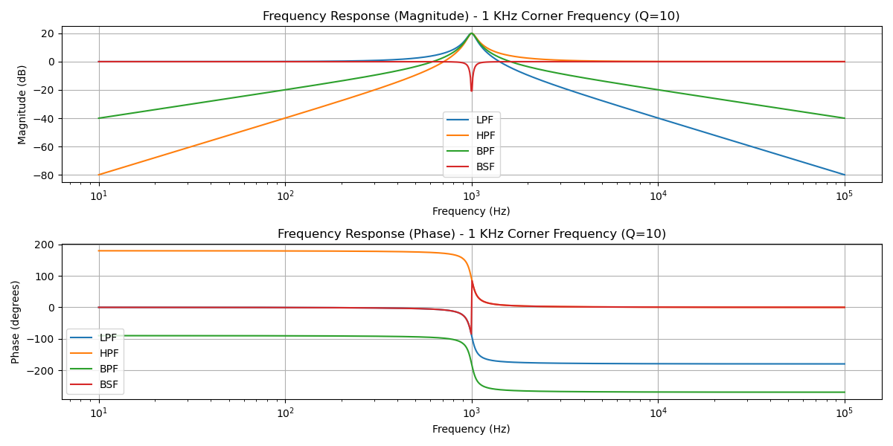
8.3 3. Transient Analysis
Transient analysis was performed to examine how the system responds to a time-domain input.
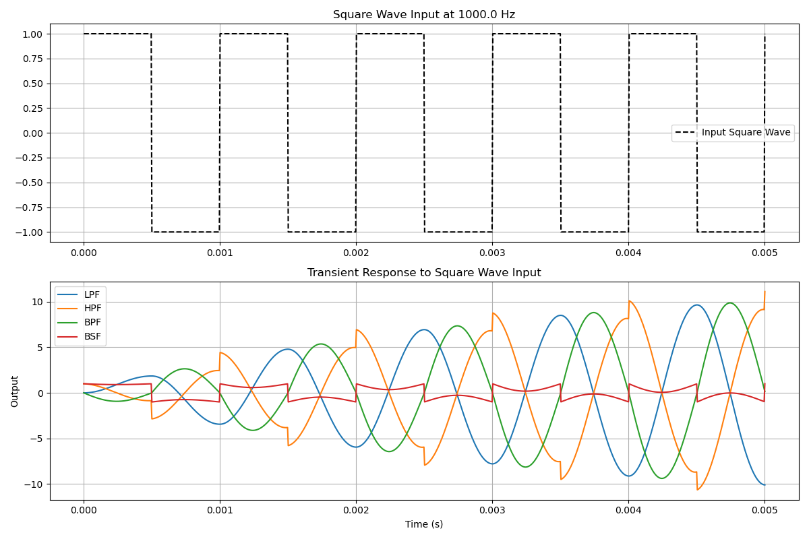
8.4 4. Conclusion
The behavioral model demonstrates expected frequency and time-domain characteristics, validating the design for further implementation. The results align with theoretical expectations, making it suitable for the next stages of circuit/system development.
9 Circuit Design and Simulation in Xschem
This section details the process of designing and simulating the second-order biquad filter using Xschem and ngspice. Our methodology progressed from an ideal, op-amp-based circuit to a more practical, transistor-level implementation, allowing for a comparative analysis of ideal and real-world performance.
9.1 Ideal Circuit: Universal Active Filter
Our initial approach was to implement a universal second-order biquad filter based on the topology described in Experiment 4 of the Texas Instruments ASLK Pro Manual. This architecture is valuable because it simultaneously provides low-pass (LPF), high-pass (HPF), band-pass (BPF), and band-stop (BSF) outputs from a single circuit.
9.1.1 Circuit Topology and Theory
The filter that we are using, uses two integrators and two inverter to realize the filter transfer functions. The general schematic is shown in Figure 9.1.
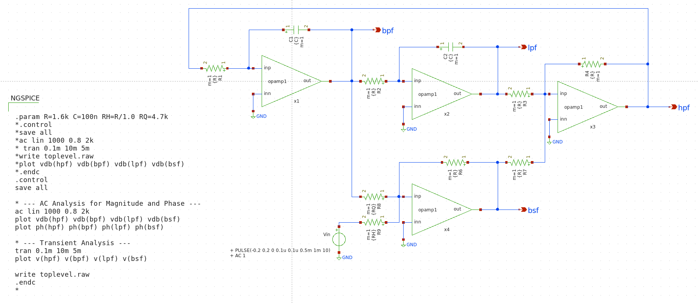
9.1.2 Ideal Op-Amp Model and Symbol Creation
To simulate the ideal behavior of this circuit, we first required an ideal operational amplifier model. We used a standard single-pole op-amp SPICE model.
Implementation Note: A common pitfall during setup is the path configuration for custom models. Xschem initially searches for model files in the project’s home directory. We had to configure the simulation settings to ensure Xschem could locate the OPAMP1.cir file in our circuit’s working directory.
9.1.3 Simulation and Results
With the ideal op-amp symbol and model in place, we constructed the schematic for the universal biquad filter. We then wrote an ngspice script to perform the analysis.
9.1.4 Frequency Response Analysis - Magnitude Response
The magnitude response of the system was plotted to observe how the system amplifies or attenuates input signals across different frequencies. The Bode magnitude plot gives a clear insight into the bandwidth and gain characteristics.
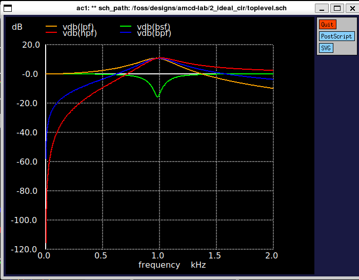
9.1.5 Phase Response
The phase response of the system was analyzed to study the phase shift introduced at various frequencies. This is essential for understanding the signal integrity and phase margin.
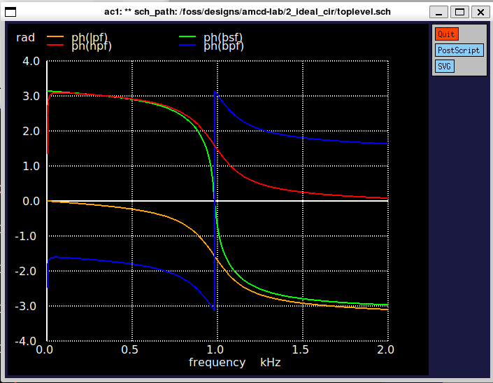
9.1.6 Transient Analysis
Transient analysis was performed to examine how the system responds to a time-domain input.
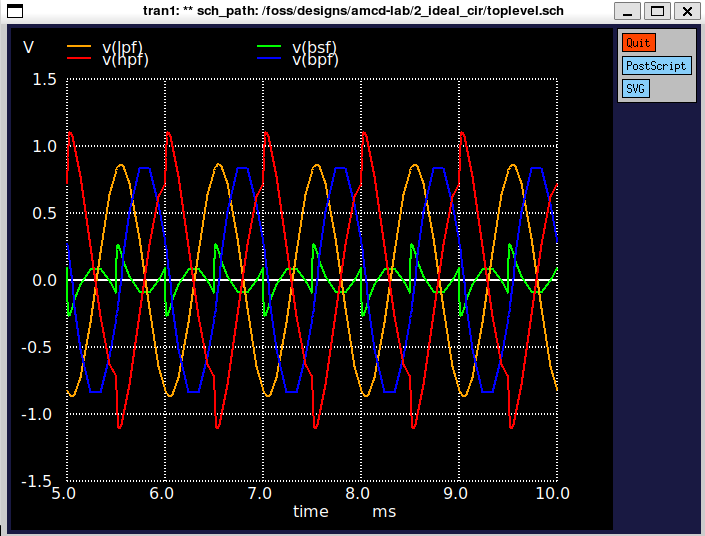
The plot clearly shows the expected behavior for each filter type, centered around 1 kHz. The BPF peaks at the center frequency, while the BSF shows a notch at the same point.
9.2 Real Circuit: Gm-C Biquad Filter
This section details the transition from an ideal circuit simulation to a practical, transistor-level implementation. The core of this process is replacing the ideal op-amp model with a custom-designed Operational Transconductance Amplifier (OTA) within the IHP Microelectronics SG13G2 130nm CMOS technology.
9.2.1 Initial Approach: The 5-Transistor OTA
Our first step towards a real circuit was to design and size a fundamental analog building block: the 5-Transistor (5T) OTA.
9.2.1.1 From an Ideal Model to a Transistor-Level Circuit
In the initial phase of the project, we used an ideal op-amp, which is a behavioral model in SPICE. It assumes infinite gain, infinite bandwidth, and zero output impedance. This is useful for verifying circuit topology and transfer functions at a conceptual level.
A real OTA, however, is built from transistors and has inherent physical limitations:
Finite Gain and Bandwidth: The voltage gain is limited by the transistor’s output impedance and transconductance.
Power Consumption: It draws a finite DC current from the power supply.
Non-linearities: Its behavior can deviate from the ideal linear model, especially with large input signals.
Noise: The transistors introduce electronic noise into the circuit.
Transitioning to a transistor-level OTA is therefore essential for designing a circuit that can be physically manufactured and will perform predictably.
9.2.1.2 Anatomy of a 5T OTA
The 5T OTA is a cornerstone of analog design due to its simplicity and efficiency. It consists of a differential input pair (M1, M2), a current-mirror active load (M3, M4), and a tail current source (M5) which sets the amplifier’s bias point.
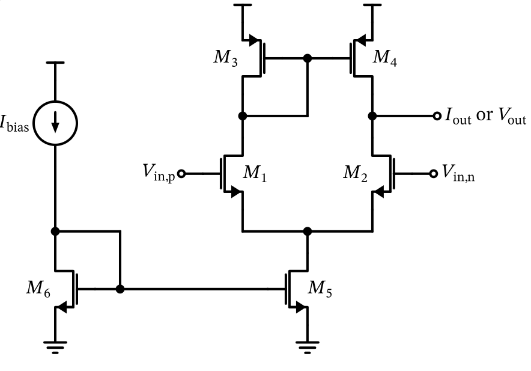
In this circuit: * M1 and M2 form the input differential pair. They operate in the saturation region, where the drain current is controlled by the gate-source voltage (\(V_{GS}\)). The differential input voltage (\(V_{in,p} - V_{in,n}\)) creates a differential current between the two branches. * M3 and M4 form a PMOS current mirror that acts as the active load. This configuration provides a high output impedance, which helps achieve a higher voltage gain compared to a simple resistive load. * M5 is the tail current source, which provides a constant bias current (\(I_{tail}\)) to the differential pair. This current is mirrored from a reference current source via M6.
The transconductance (\(g_m\)) of the OTA is primarily set by the characteristics of the input pair and its bias current.
9.2.1.3 Sizing the 5T OTA with the gm/ID Methodology
To determine the transistor dimensions (W/L), we used the modern gm/ID sizing methodology. This approach utilizes pre-characterized lookup tables from foundry data (in our case, SG13G2) to achieve an optimal balance between performance metrics like gain, speed, and power.
The quantitative sizing process is summarized below.
Design Specifications & Key Parameters
| Parameter | Value | Description |
|---|---|---|
| Technology | SG13G2 130nm | IHP Microelectronics CMOS process |
| Load Capacitance | 50 fF | Assumed load for bandwidth calculation |
| Target Bandwidth | 10 MHz | -3dB bandwidth target for the OTA |
| Total Current Limit | 10 µA | Maximum allowed supply current |
PMOS gm/ID (M3, M4) |
5 S/A | Operating point for the active load |
NMOS gm/ID (M1, M2) |
10 S/A | Operating point for the differential pair |
| Channel Length (L) | 5 µm | Chosen for high intrinsic gain (gm/gds) |
Quantitative Sizing Analysis
Required Transconductance (\(g_m\)): The target bandwidth (\(f_{bw}\)) for a given load (\(C_{load}\)) dictates the required transconductance of the input pair. We include a margin of 3x to account for parasitics. \[ g_{m1,2} = f_{bw} \times 3 \times 4\pi C_{load} = 10 \text{ MHz} \times 3 \times 4\pi \times 50 \text{ fF} \approx 18.8 \text{ µS} \]
Bias Current Calculation: With a target
gm/IDof 10 S/A for the input pair, the required drain current per transistor is: \[ I_{D1,2} = \frac{g_{m1,2}}{g_m/I_D} = \frac{18.8 \text{ µS}}{10 \text{ S/A}} = 1.88 \text{ µA} \] The total tail current is \(I_{tail} = 2 \times I_{D1,2} = 3.76 \text{ µA}\), which was rounded up to 4.0 µA. This meets our power consumption target of < 10 µA.DC Gain (\(A_0\)) Calculation: The DC voltage gain is the transconductance divided by the total output conductance (\(g_{ds1,2} + g_{ds3,4}\)). Using the lookup tables to find the intrinsic gain (
gm/gds) for our chosen operating points andL=5µm: \[ A_0 = \frac{g_{m1,2}}{g_{ds1,2} + g_{ds3,4}} \Rightarrow 20 \log_{10}(A_0) \approx 34.8 \text{ dB} \]Transistor Widths (W): The final step is to find the transistor widths that provide the required currents for the chosen
gm/IDandL. This is done by looking up the current density (ID/W) and calculating \(W = I_D / (I_D/W)\).
Based on this quantitative sizing, the following schematic was created in Xschem, representing the physical implementation of our basic 5T OTA.
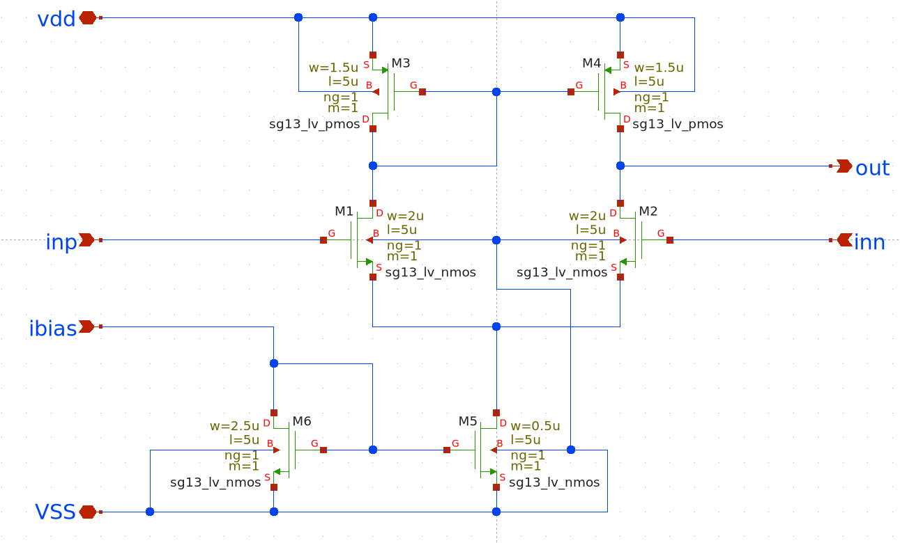
9.2.2 Implementation with the Universal Biquad Filter
With a basic OTA designed, we moved to implement a filter. For this, we used an initial 5T OTA design from Professor Pretl’s documentation as a reference, primarily because it included additional biasing circuitry for enable/disable functionality. For this implementation, a bias current (I_bias) of 20µA was used.
The schematic below shows this specific OTA. In addition to the core 5T structure (M1-M5), it includes transistors (M7, M8, M12, M13) controlled by enable signals (ena, d_ena) that can shut down the bias currents to turn the OTA off.
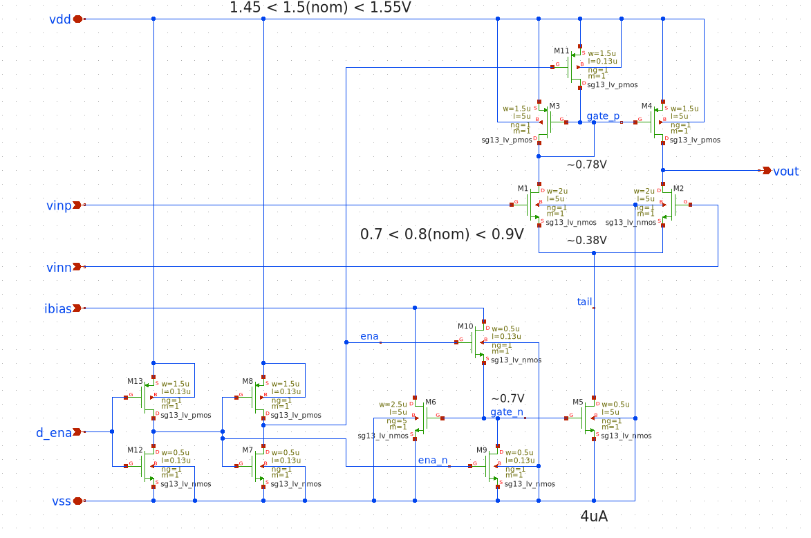
We then replaced the ideal op-amp blocks in our universal biquad filter with this real, transistor-level OTA. This is a critical step: while the ideal circuit verifies the mathematical correctness of the filter topology, the real circuit tests whether the design can function with the physical limitations (finite gain, low drive current) of the chosen OTA.
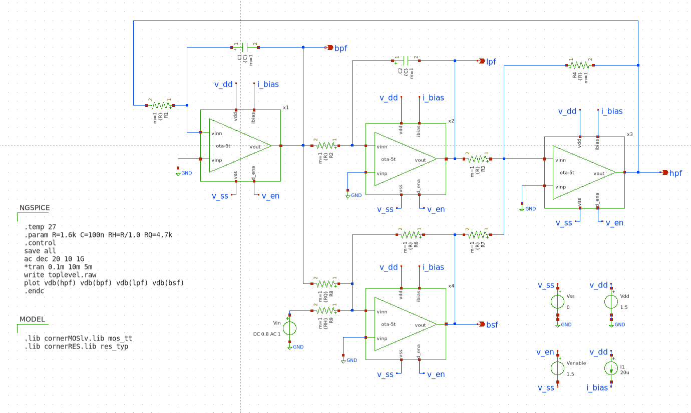
9.2.2.1 Simulation and Analysis of Failure
The AC analysis of the real-circuit universal biquad produced the following results, which represent a complete failure of the filter.
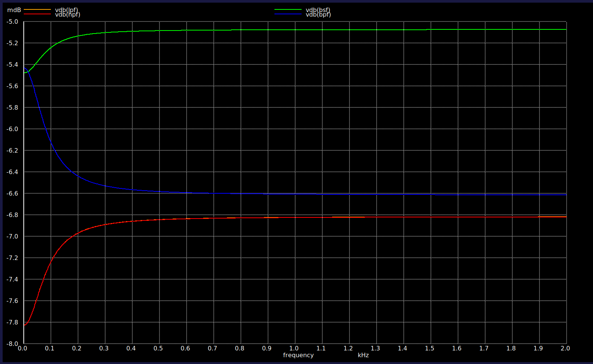
The results unequivocally show that the circuit is not performing any filtering. This failure is a direct consequence of the OTA’s poor performance, particularly its low DC gain (~35 dB) and insufficient drive current, which are unable to make the integrator loops in the biquad operate correctly.
9.2.3 Design Challenges and Pivot
The unsuccessful simulation of the universal biquad filter highlighted critical flaws in our initial approach:
- Topology Unsuitability: The universal biquad topology, while versatile in theory, proved overly complex and sensitive for a practical IC implementation with a simple OTA.
- OTA Performance Limitations: The quantitative analysis and simulation results confirmed that the 5T OTA was the primary bottleneck. The DC gain was insufficient for a high-Q filter, and the drive current was too low.
These findings necessitated a complete redesign of both the filter topology and the core amplifier.
9.2.4 A New Direction: Baker’s Gm-C Biquad Filter
We pivoted to a more robust design by referencing R. Jacob Baker’s CMOS Mixed-Signal Circuit Design. We selected a Gm-C biquad filter topology and set out to design a high-performance, fully differential OTA to drive it.
9.2.4.1 High-Performance Fully Differential OTA: Conceptual Architecture
The chosen architecture is a fully differential OTA designed to convert a differential input voltage into a differential output current. It is composed of three main functional blocks.
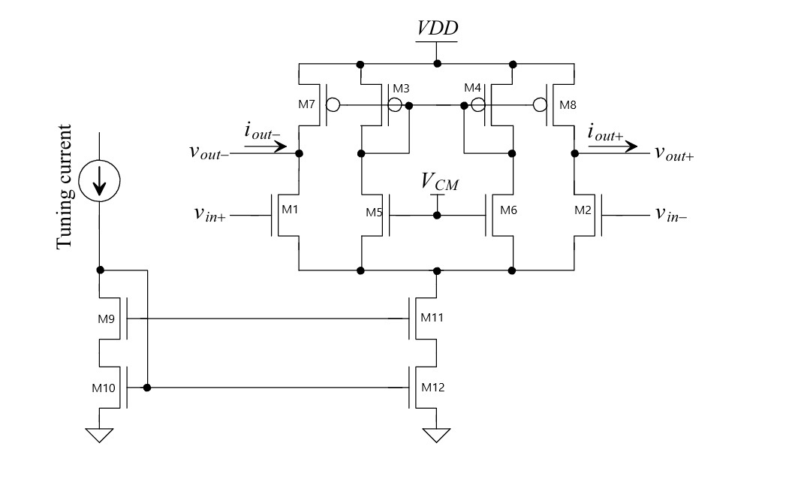
Main Amplifier Stage: The core is a single-stage differential amplifier. Transistors M1 and M2 form the NMOS input differential pair. M7 and M8 are PMOS transistors acting as an active load, sourcing current into the output nodes (
vout+,vout-) and providing high output resistance for gain. M11 is a tail current source that sets the DC bias for the input pair.Biasing Circuit: The section on the left, with the Tuning Current source and diode-connected transistors M9 and M10, is the master biasing circuit. The external tuning current establishes stable gate-to-source voltages that are then used to bias the gates of M11 and M12 via current mirroring.
Common-Mode Feedback (CMFB) Circuit: In a fully differential amplifier, the DC level of the outputs must be precisely defined. The CMFB circuit (M3-M6, M12) senses the common-mode voltage of the outputs, compares it to a reference voltage (VCM), and creates a negative feedback loop by adjusting the gate voltage of the active load transistors (M7, M8). This locks the output common-mode voltage at a stable, desired level.
9.2.4.2 Sizing the High-Performance OTA
We adapted the gm/ID methodology to size this more complex OTA. The design goals for this amplifier were significantly more ambitious than for the initial 5T OTA, targeting higher gain and drive current suitable for a high-performance filter.
New Design Specifications
| Parameter | Value | Comparison with 5T OTA |
|---|---|---|
| Target DC Gain | 60 dB | Much higher than the 35 dB achieved |
| Input Bias Current | 100 µA | A 5x increase over the 20µA used |
gm/ID (Input Pair) |
18 S/A | Higher efficiency (weaker inversion) |
| Channel Length (L) | 0.5 µm | Shorter, for higher speed |
Quantitative Sizing Analysis
The sizing began with the bandwidth requirement, which sets the needed transconductance. \[ g_{m1,2} = f_{bw} \times 2\pi C_{load} \times (\text{Safety Factor}) = 10\text{e}6 \times 2\pi \times 50\text{e-15} \times 3 \approx 10 \text{ µS} \] From this, the bias currents for the differential pair and the tail current were calculated: \[ I_{D1,2} = \frac{g_{m1,2}}{g_m/I_D} = \frac{10 \text{ µS}}{18 \text{ S/A}} \approx 0.52 \text{ µA} \] \[ I_{tail} = 2 \times I_{D1,2} \approx 1.05 \text{ µA} \]
The crucial step was the DC gain calculation. The gain is set by the input transconductance and the total output resistance (\(r_{o,total} = r_{o,nmos} || r_{o,pmos}\)). \[ A_0 = g_{m1,2} \times (r_{o,1,2} || r_{o,7,8}) \] Using lookup tables to find the intrinsic gain (gm/gds) for each transistor at L=0.5µm and then calculating the output resistances, the analysis yielded a very low result: \[ A_0 \Rightarrow 20 \log_{10}(A_0) \approx 21.5 \text{ dB} \]
Analysis of Sizing Limitations
The sizing exercise exposed critical design trade-offs and challenges:
Failure to Meet Gain Target: The resulting 21.5 dB of gain falls drastically short of the 60 dB specification. This is a direct consequence of using a short channel length (
L=0.5µm), which severely limits the transistor’s intrinsic gain (gm/gds), making high DC gain unachievable.Headroom and Output Swing Failure: The voltage headroom analysis revealed that the design could not support the required output voltage levels, stating explicitly:
[WARNING] Output voltage requirement is NOT met!.
Despite attempts to rectify this by exploring different gm/ID ratios and longer channel lengths, the 60 dB target remained elusive within the constraints of this specific topology and sizing choices. Faced with these results, we proceeded by implementing the OTA in Xschem using the values calculated from our analysis, acknowledging the known performance limitations.
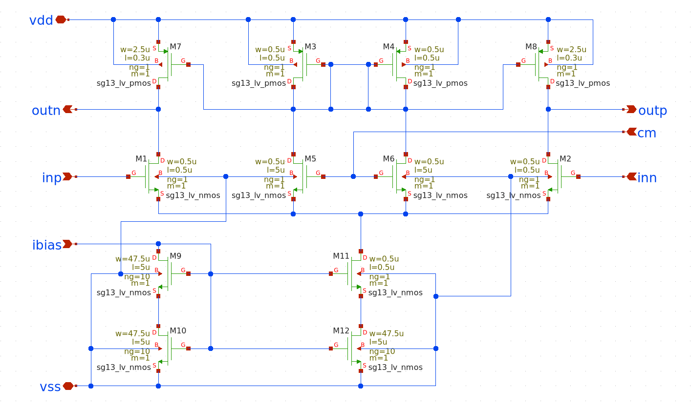
9.2.5 Component Sizing and Filter Design
Despite the OTA’s lower-than-desired gain, we proceeded to design the filter’s passive network. The chosen topology is a Gm-C biquadratic filter, a versatile and tunable second-order architecture that uses integrators made from transconductors and capacitors.
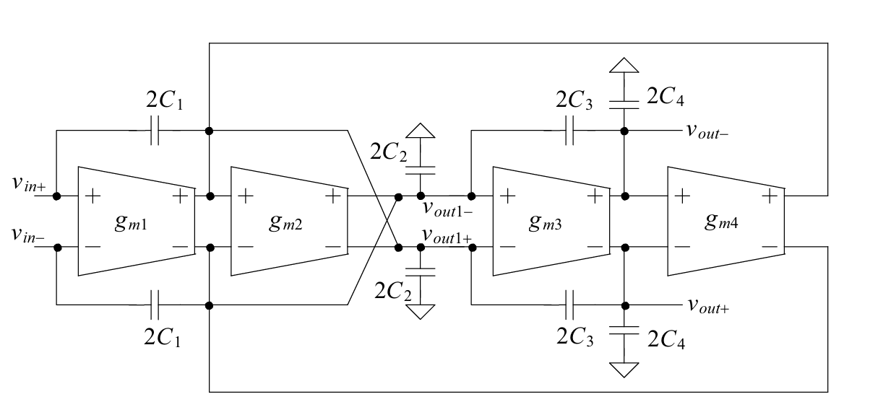
This Gm-C biquad structure is essentially a cascade of two integrator blocks with feedback. The first stage (built around gm1, gm2, and associated capacitors) and the second stage (built around gm3, gm4, and capacitors) are interconnected. The feedback from the final output back to the input creates the second-order response necessary for achieving high Q-factors. A primary advantage of this topology is its electronic tunability; the filter’s center frequency (\(f_0\)) and quality factor (Q) are set by gm and C values. Since the gm can be adjusted by changing bias currents, the filter can be tuned after fabrication, making it ideal for integrated circuits where precise resistor values are difficult to achieve.
9.2.5.1 Design Calculations
The design process involves mapping the desired filter characteristics onto the general biquad transfer function and then solving for the specific capacitance values. Our goal is to find the values for capacitors C1, C2, C3, and C4 to create a low-pass filter with the following specifications:
Center/Cutoff Frequency (\(f_0\)): 1 kHz
Quality Factor (Q): 10
Transconductance (\(g_m\)): 100 µS for gm1, gm2, gm3, and gm4.
9.2.5.1.1 Step 1: Start with the General Biquad Transfer Function
The design begins with the general transfer function for the biquad topology, which describes how the filter responds to any frequency s. The numerator of the function defines the filter’s zeroes (frequencies it blocks), and the denominator defines its poles (the natural resonant frequencies that shape the response, like \(f_0\) and Q). The general transfer function is given by: \[ \frac{V_{out}}{V_{in}} = \frac{s^2(G_1 G_3 G_4 G_6) + s(G_1 G_3 G_4 + G_1 G_4 G_6) + G_1 G_4}{s^2 + s(G_1 G_2 + G_1 G_4 G_5 G_6) + G_1 G_4 G_5} \]
9.2.5.1.2 Step 2: Simplify for a Low-Pass Filter
An ideal second-order low-pass filter should only have a constant term in the numerator, representing the DC gain. \[ H(s)_{LP} = \frac{\text{DC Gain}}{s^2 + s\frac{\omega_0}{Q} + \omega_0^2} \] To make our general equation match this ideal form, we must eliminate the s and s² terms from the numerator. The simplest way to make the coefficients of both terms zero is to set \(G_3 = 0\) and \(G_6 = 0\). Physically, this corresponds to removing capacitors \(C_1\) and \(C_3\), as their definitions are \(G_3 = C_1 / g_{m1}\) and \(G_6 = C_3 / g_{m3}\).
9.2.5.1.3 Step 3: Establish the Final Design Equations
With \(G_3=0\) and \(G_6=0\), we can equate the denominators of our simplified transfer function and the ideal low-pass filter. This provides our final design equations:
Design Equation A (\(f_0\)): \((2\pi f_0)^2 = G_1 G_4 G_5\)
Design Equation B (Q): \(\frac{2\pi f_0}{Q} = G_1 G_2\)
9.2.5.1.4 Step 4: Calculate Capacitor C₂
We start with Design Equation B. First, we substitute the component definitions from the topology (\(G_1 = g_{m1} / C_2\) and \(G_2 = g_{m2} / g_{m1}\)): \[ \frac{2\pi f_0}{Q} = \left(\frac{g_{m1}}{C_2}\right) \left(\frac{g_{m2}}{g_{m1}}\right) \] The \(g_{m1}\) terms cancel, simplifying the equation significantly: \[ \frac{2\pi f_0}{Q} = \frac{g_{m2}}{C_2} \] Now, we rearrange to solve for \(C_2\) and insert the specified values: \[ C_2 = \frac{g_{m2} \times Q}{2\pi f_0} = \frac{(100 \times 10^{-6} \text{ S}) \times 10}{2 \pi \times 1000 \text{ Hz}} = \frac{0.001}{6283.2} = 1.5915 \times 10^{-7} \text{ F} \] \[ C_2 = 159.2 \text{ nF} \]
9.2.5.1.5 Step 5: Calculate Capacitor C₄
Next, we use Design Equation A. We substitute the definitions for \(G_1\), \(G_4\), and \(G_5\): \[ (2\pi f_0)^2 = \left(\frac{g_{m1}}{C_2}\right) \left(\frac{g_{m3}}{C_4}\right) \left(\frac{g_{m4}}{g_{m3}}\right) \] The \(g_{m3}\) terms cancel out: \[ (2\pi f_0)^2 = \left(\frac{g_{m1}}{C_2}\right) \left(\frac{g_{m4}}{C_4}\right) \] From the previous step, we know that \(\frac{g_{m1}}{C_2} = \frac{2\pi f_0}{Q}\) (since \(g_{m1}=g_{m2}\)). Substituting this provides a more elegant path to the solution: \[ (2\pi f_0)^2 = \left(\frac{2\pi f_0}{Q}\right) \left(\frac{g_{m4}}{C_4}\right) \] Dividing both sides by \(2\pi f_0\) and rearranging for \(C_4\): \[ 2\pi f_0 \times Q = \frac{g_{m4}}{C_4} \implies C_4 = \frac{g_{m4}}{2\pi f_0 \times Q} \] Finally, we insert the values: \[ C_4 = \frac{100 \times 10^{-6} \text{ S}}{(6283.2 \text{ rad/s}) \times 10} = \frac{100 \times 10^{-6}}{62832} = 1.5915 \times 10^{-9} \text{ F} \] \[ C_4 = 1.59 \text{ nF} \]
9.2.5.1.6 Final Design Summary
To implement the low-pass filter, the following component values are required:
| Component | Value | Purpose |
|---|---|---|
| \(g_{m1,2,3,4}\) | 100 µS | Sets filter gain and characteristics |
| \(C_1\) | 0 F (removed) | Simplifies filter to low-pass response |
| \(C_2\) | 159.2 nF | Sets the Q-factor |
| \(C_3\) | 0 F (removed) | Simplifies filter to low-pass response |
| \(C_4\) | 1.59 nF | Sets the center frequency, \(f_0\) |
A critical review of these final component values reveals a significant practical challenge. The calculated capacitors, particularly \(C_2 = 159.2 \text{ nF}\), are enormously large for on-chip implementation.
For context, at a typical Metal-Insulator-Metal (MIM) capacitor density for the SG13G2 process (around 1-2 fF/µm²), a 159.2 nF capacitor would occupy an area of roughly 80-160 mm². This is prohibitively large, often exceeding the area of an entire die, and thus is completely impractical for a monolithic integrated circuit.
This issue arises directly from the design specifications: a very low target frequency (\(f_0 = 1 \text{ kHz}\)) combined with a moderately high transconductance (\(g_m = 100 \text{ µS}\)). For a production-ready design, a mandatory next step would be to re-evaluate these specifications. The most common approach would be to drastically reduce the OTA’s transconductance (e.g., to 1 µS or less), which would proportionally decrease the required capacitance to a manageable level (e.g., \(C_2 \approx 1.6 \text{ nF}\)).
For the purpose of this academic exercise, we will proceed with the calculated values to demonstrate the correctness of the design methodology and to verify the filter’s transfer function in simulation.
9.2.6 Final Implementation and Verification
The final Gm-C biquad filter was assembled in Xschem using the newly designed OTAs and calculated capacitors.
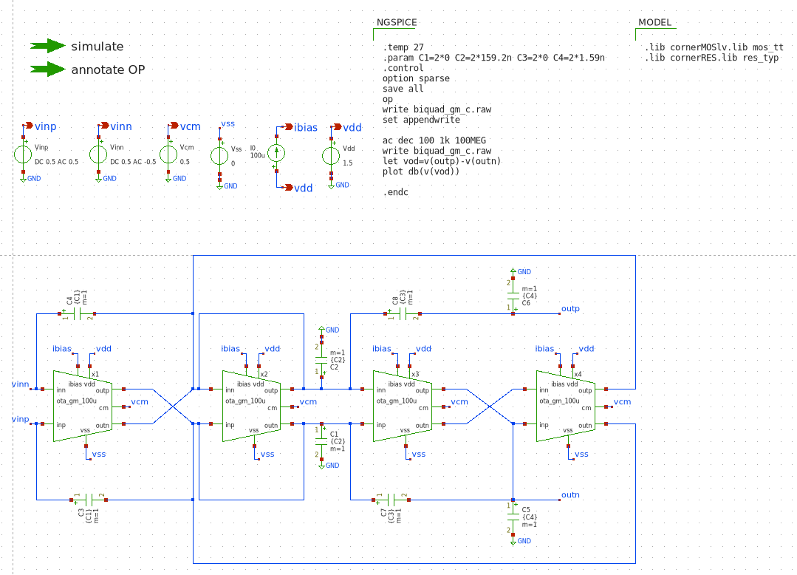
AC analysis was performed, with the expected output being a low-pass response with a sharp resonant peak at 1 kHz due to the high Q-factor, followed by a -40 dB/decade roll-off.
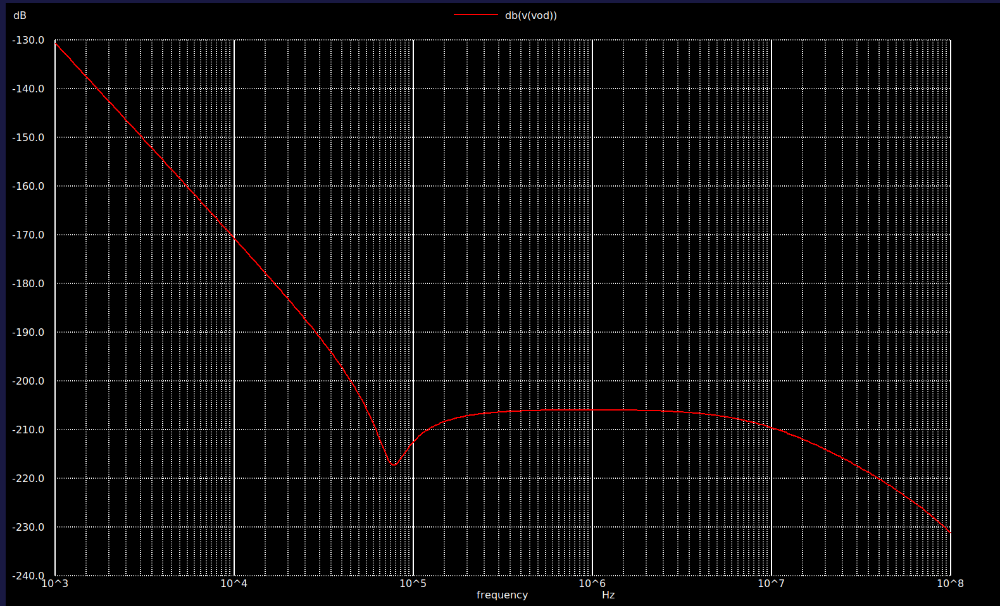
While facing challenges in reaching the desired OTA gain, the final Gm-C filter’s simulated low-pass response indicated areas for further optimization in the design approach for mixed-signal applications.
10 Conclusion
Our work presented the IC design of a universal biquad filter targeting at 1 kHz corner frequency with a Q-factor of 10. Our design journey began with Python-based behavioral modeling to analyze ideal filter characteristics. We then transitioned to circuit implementation and simulation in Xschem, initially exploring an op-amp based universal biquad. However, its transistor-level realization using a basic 5-transistor Operational Transconductance Amplifier (OTA) proved unsuccessful due to the OTA’s inherent performance limitations, particularly its insufficient DC gain and drive current.
This significant hurdle necessitated a strategic pivot to a more robust Gm-C biquad filter topology, driven by a newly designed, high-performance fully differential OTA. While the quantitative sizing analysis for this advanced OTA revealed challenges in meeting the ambitious target gain (only achieving 21.5 dB instead of 60 dB) and output swing requirements, we proceeded with its implementation to validate the design methodology.
Moving forward, a production-ready design would require a re-evaluation of the filter specifications, likely involving a reduction in the OTA’s transconductance to yield manageable on-chip capacitance values. This exercise underscores the intricate trade-offs inherent in mixed-signal IC design, where theoretical ideals must converge with practical fabrication constraints.